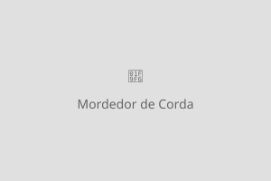

Acessórios
Confira nossos acessórios para deixar seu pet ainda mais confortável e feliz!
Cama Pet Confort

Descrição: Cama acolchoada de alta qualidade, ideal para cães e gatos de porte pequeno e médio. Feita com tecido macio e lavável, proporcionando conforto e segurança para o descanso do seu pet. Disponível nas cores azul, rosa e cinza.
Tamanho: 60cm x 50cm x 15cm
Valor: R$ 129,90
Brinquedo Mordedor de Corda

Descrição: Brinquedo mordedor de corda trançada, resistente e colorido. Perfeito para brincadeiras de puxar e morder, auxiliando na limpeza dos dentes e no alívio do estresse do seu cão. Feito com material atóxico e durável.
Tamanho: 30cm de comprimento
Valor: R$ 24,90
Roupa de Inverno para Cães
Descrição: Moletom com capuz para cães de porte pequeno e médio. Tecido quentinho e confortável, ideal para os dias frios. Fácil de vestir e lavar. Disponível nos tamanhos P, M e G, nas cores vermelho, azul marinho e cinza.
Tamanhos disponíveis: P, M, G
Valor: R$ 59,90